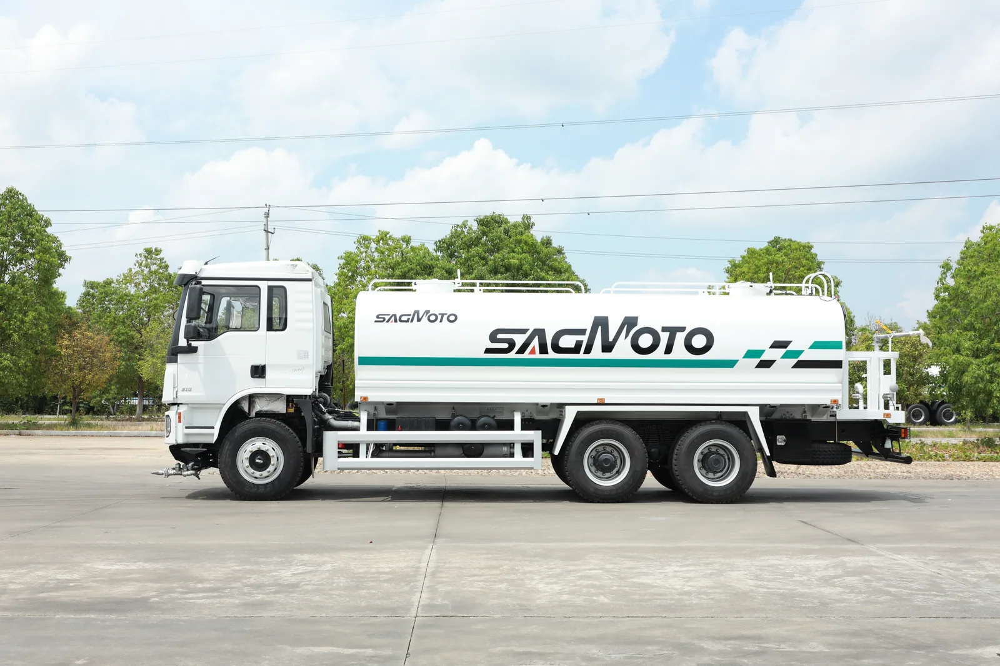

A water tanker may supply construction work, support road cleaning or carry water between a filling point and a site. Those jobs do not necessarily need the same tank, pump or discharge arrangement. The SAGMOTO X5 platform material includes a 6x4 water-tanker application; the final capacity and equipment are not specified by the photograph and must be engineered for the intended duty.
Describe the water task before selecting equipment
Explain whether the truck will transport water only, spray it while moving, supply hoses at a stationary work point, or perform more than one task. For road cleaning or dust suppression, identify the desired spray locations and operating speed range. For site supply, describe hose reach, connection type and how the truck will discharge. State whether water is clean, untreated or carries suspended material, because that can affect equipment and maintenance choices.
Tank size depends on the refill cycle
Estimate water use per shift and the distance and time required to reach a refill point. A larger tank can reduce refill trips but adds mass when full and may change vehicle dimensions, axle distribution and route access. Confirm whether the truck will work on public roads, project roads or both, and check the applicable weight limits with the destination-side authority or importer.
Physical tank volume is not a payload rating. The completed vehicle must account for chassis and body mass, water mass, equipment and axle loads. Final tank dimensions and usable volume should therefore be approved with the chassis configuration rather than selected in isolation.
Specify pump and spray functions as an operating brief
Instead of asking only for a pump, provide the water source and lift conditions, filling method, outlets, hose use and required spray tasks. If flow or pressure targets are known, include them and the conditions under which they are measured. Specify whether the design needs front, side or rear spray points, a monitor or cannon, a watering bar, or another function only when the project requires it.
Confirm PTO compatibility, controls, pipe routing, drains and access for service. Spray width, flow and pressure are performance values that need a defined test method; none should be inferred from a product image.

Water-truck RFQ inputs
- Task type, shift duration and estimated daily water use
- Water source, refill location, suction lift and connection details
- Required outlets, hose arrangement and spray functions
- Target tank volume, with operating and refill assumptions
- Road surface, gradients, access limits and destination weight rules
- Steering side, emissions requirement and service capability
- Inspection points and pump/system test criteria for handover
FAQ
Can the tank be made as large as the body space allows?
Not automatically. Tank size must fit completed-vehicle mass, axle distribution, handling and local legal limits.
Can a water tanker also be a sprinkler truck?
It can be designed for combined functions if the tank, pump, piping, controls and chassis are specified for them. State the tasks at the quotation stage.
Are flow and spray width known from the current photo?
No. Request the confirmed equipment data and test conditions for the proposed build.
Plan an X5 water-truck specification
Send your task, refill conditions, spray requirements and destination for a configuration review.
Submit requirements · WhatsApp +86 185 9197 6330 · X5 platform overview